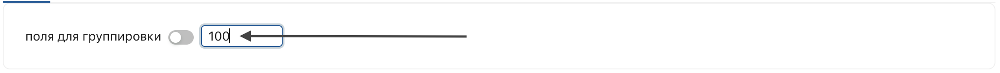
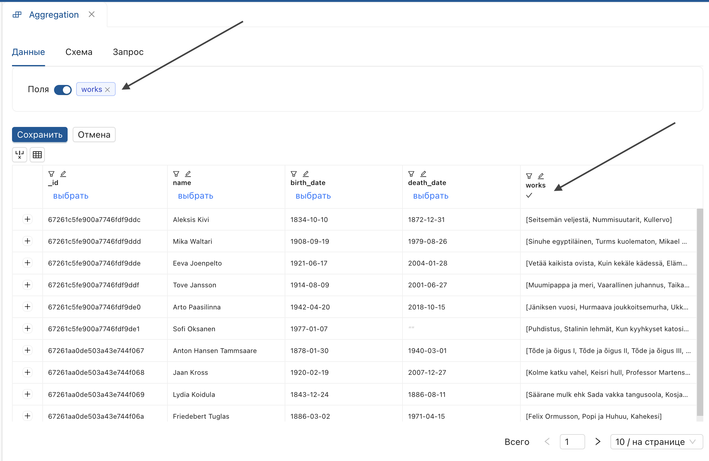
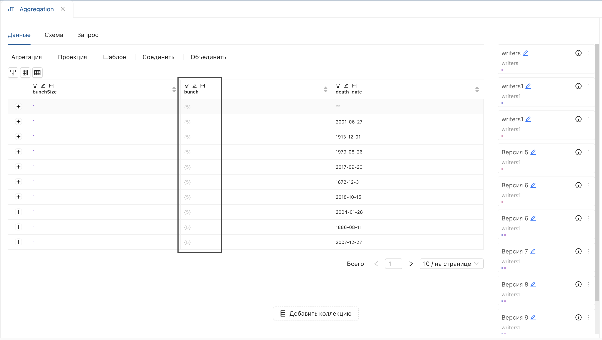

Агрегация
Агрегация — модуль для преобразования данных, позволяющий выполнять одну настройку за одну версию преобразования.
Чтобы начать работу, откройте страницу версии настройки и выберите Агрегация на функциональной панели.
 Результат: отобразится выпадающий список агрегаций.
Результат: отобразится выпадающий список агрегаций.
Сохранить поля
- Выберите операцию "Сохранить поля" из списка.
- В открывшемся окне:
- Нажмите на переключатель.
- Выберите поля.

- Нажмите "Сохранить".
Результат: указанные поля добавятся в производную версию.

Удалить поля
- Выберите операцию "Удалить поля" из списка.
- В открывшемся окне:
- Нажмите переключатель.
- Отметьте поля, которые нужно удалить.

- Нажмите "Сохранить".
Результат:
Производная версия настройки не содержит указанные поля.

Сгруппировать дубли
- Выберите операцию «Сгруппировать дубли» из списка.
-
В открывшемся окне:
- Установите переключатель поля для группировки.
- Выберите поля и нажмите "Сохранить"

Производная версия содержит:
- Поле с отображением длины массива BunchSize.
- Поле с группами уникальных значений, вложенных в массив данных.
- Исходное поле.

-
Для просмотра содержимого массива дважды нажмите по нему.
Результат:
Отобразится окно со списком полей, вложенных в массив.
-
При нажатии на поле отобразятся данные массива. Отображение данных вложенного массива > Ограничение: размер документа — 16 Мб. Ограничение может быть превышено после группировки.
Для корректного выполнения установите максимальное количество значений при заполнении параметров.
 5. Чтобы развернуть массив на верхний уровень, используйте агрегацию "Развернуть массив".
{kind=link}
Удалить дубли
- Выберите операцию "Удалить дубли" из списка.
- В открывшемся окне:
- Установите переключатель "поля".
- Выберите поля и нажмите "Сохранить".

Результат:
Будет создана производная версия с уникальными значениями полей.
Развернуть массив
Разворачивает массив данных на верхний уровень.
Для выполнения операции используйте коллекцию с вложенным массивом данных (в таблице отображается в виде квадратных и фигурных скобок "[количество значений{}]").
- Выберите операцию "Развернуть массив" из списка.
- В открывшемся окне:
- Установите параметр "поле" по заголовку поля, содержащего массив данных.
- Введите произвольный префикс.

- Нажмите "Сохранить".
Результат:
Подмассивы вынесены на верхний уровень с указанным префиксомом.

Развернуть в объект
- Выберите операцию «Развернуть в объект» из списка.
- В открывшемся окне:
- Установите параметр "поле" по заголовку поля, содержащего массив данных.

- Нажмите "Сохранить".
- Установите параметр "поле" по заголовку поля, содержащего массив данных.
Результат:
Поля массива разворачиваются в объект (объект отображается с фигурными скобками).

В результате данной функции доступно назначение параметров ко вложенным данным.
Назначение параметров ко вложенному объекту
Для преобразования данных во вложенном объекте:
- Выберите операцию преобразования.
- Откройте поля для группировки, дважды щелкнув по ячейке.
- Нажмите на поле, содержащее вложенную структуру.
- Дважды нажмите на объект для отображения данных.
- Выставьте параметры условия.
- Введите имя производного поля "Сохранить".
Поля со вложенными структурами отображаются контрастно.

Результат:
Операция будет применена к данным внутри объекта.
Посчитать минимум
Вычисляет минимальное значение для группы значений.
- Выберите операцию "Посчитать минимум".
-
В открывшемся окне:
- Установите переключатель поля для группировки.
- Выберите поля.

- Установите параметр "минимум по полю".
- Выберите поля.

-
Нажмите "Сохранить".
Результат:
Созданы уникальные группы значений с рассчитанным минимумом для каждой.